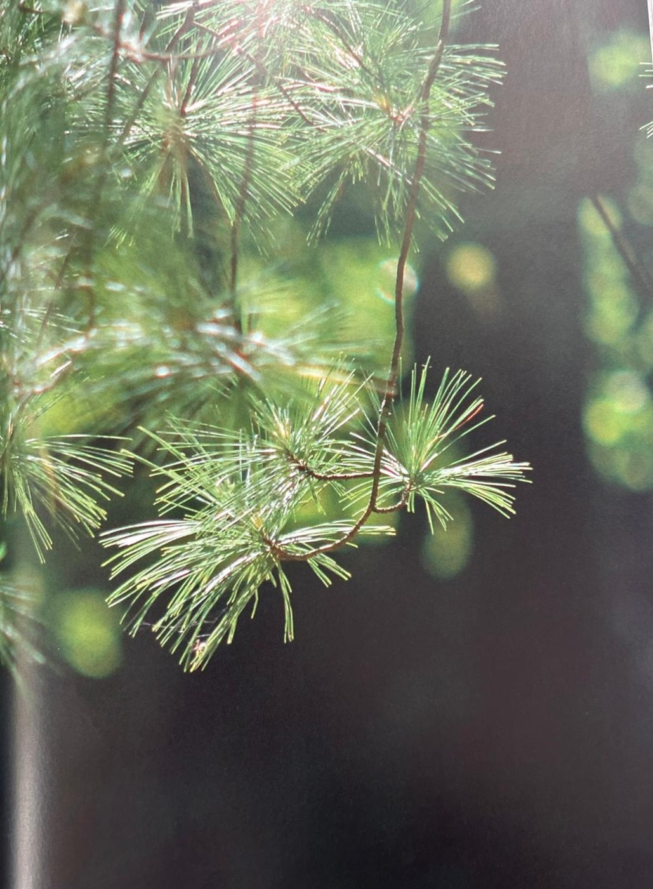

Groepen › Oude Wereld
34. West-Nepal, Himalayagebergte

Nepal bestrijkt een langgestrekte landstrook bezuiden de Himalaya, met grote hoogteverschillen van 60 m boven de zeespiegel in de alluviale vlakte van de Ganges tot 8848m op de top van de Mount Everest. De klimaatomstandigheden en de vegetaties zijn al naar gelang van het reliëf even verschillend en rijk. De arboretumgroep 34 focust op de naaldhoutbossen in West-Nepal. Zij worden voornamelijk gevormd door Himalayazilverspar, Tranenden en Himalayaspar. Van de oorspronkelijke aanplantingen is nog slechts één grote Tranenden overgebleven. Oude Himalayaceders zijn helemaal verdwenen, maar er zijn er recent opnieuw aangeplant. Er staan ook een dozijn exemplaren van Himalyaspar, een merkwaardige treurspar. Naar Himalayazilverspar zijn de arboretumbeheerders nog steeds op zoek. Er staat ook een groepje Pindrow-zilversparren en enkele soorten van jeneverbes en esdoornstruiken. Aan de weidekant een mooie groep van Boomhazelaars en enkele Himalayberken.
Uit het boek
0,34 ha · 21 soorten · 225 bomen · weerstation Pokhara
- Van de aanplant van 1920 bleef niets over; de oudste boom is een tranenden uit 1944. De himalayaceder mislukte telkens.

Bron: Geografisch Arboretum Tervuren. Een wereldreis rond bomen (2020), p. 246 en volgende.
Deelgroepen
- 34 – Himalayagebergte, West-Nepal
Soorten in deze groep (21)
- Pinus wallichianaTranenden · 83 bomen
- Corylus colurnaTurkse boomhazelaar · 39 bomen
- Cedrus deodaraHimalayaceder · 28 bomen
- Juniperus convallium var. convallium20 bomen
- Picea smithianaHimalayaspar · 13 bomen
- Juniperus recurva var. recurva8 bomen
- Betula utilis var. utilisHimalayaberk · 6 bomen
- Abies pindrowPindrowzilverspar · 5 bomen
- Aesculus indica4 bomen
- Acer acuminatum3 bomen
- Acer caesium3 bomen
- Prunus rufa3 bomen
- Acer campbelli2 bomen
- Abelia triflora1 boom
- Acer pectinatum1 boom
- Cedrus atlanticaAtlasceder · 1 boom
- Cupressus species1 boom
- Mespilus germanicaMispel · 1 boom
- Prunus avium subsp. aviumZoete kers · 1 boom
- Quercus castaneifoliaKastanjebladeik · 1 boom
- Rhododendron campanulatumBlauwbladrododendron · 1 boom
Tekst en foto: arboretum-tervuren.be (Koninklijke Schenking), met toestemming gebruikt.